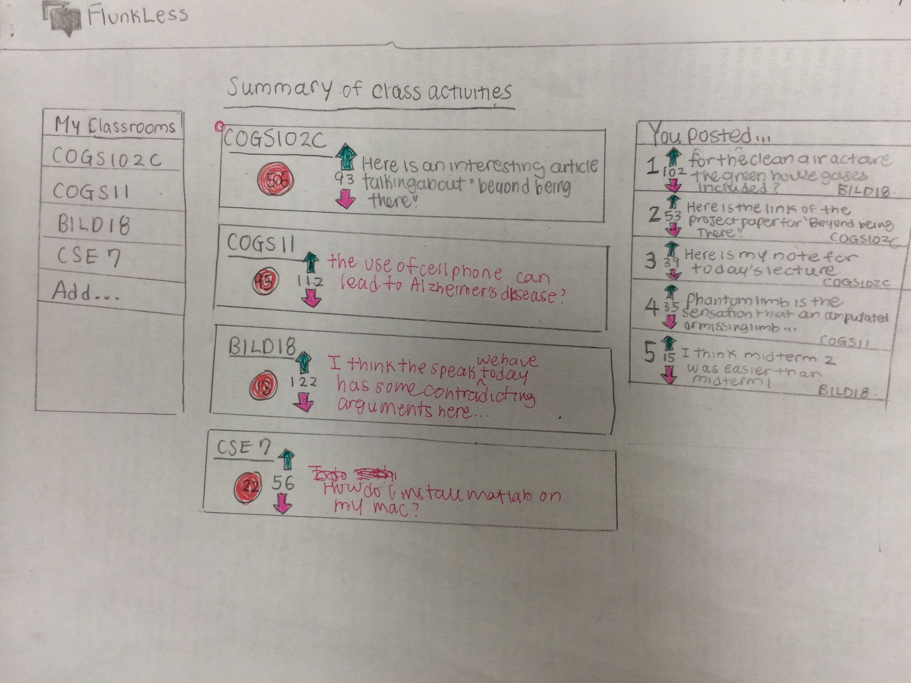
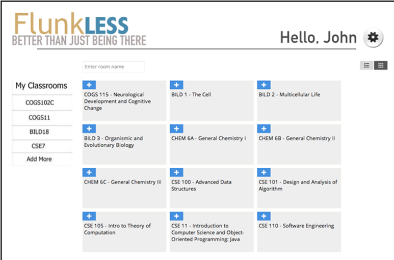
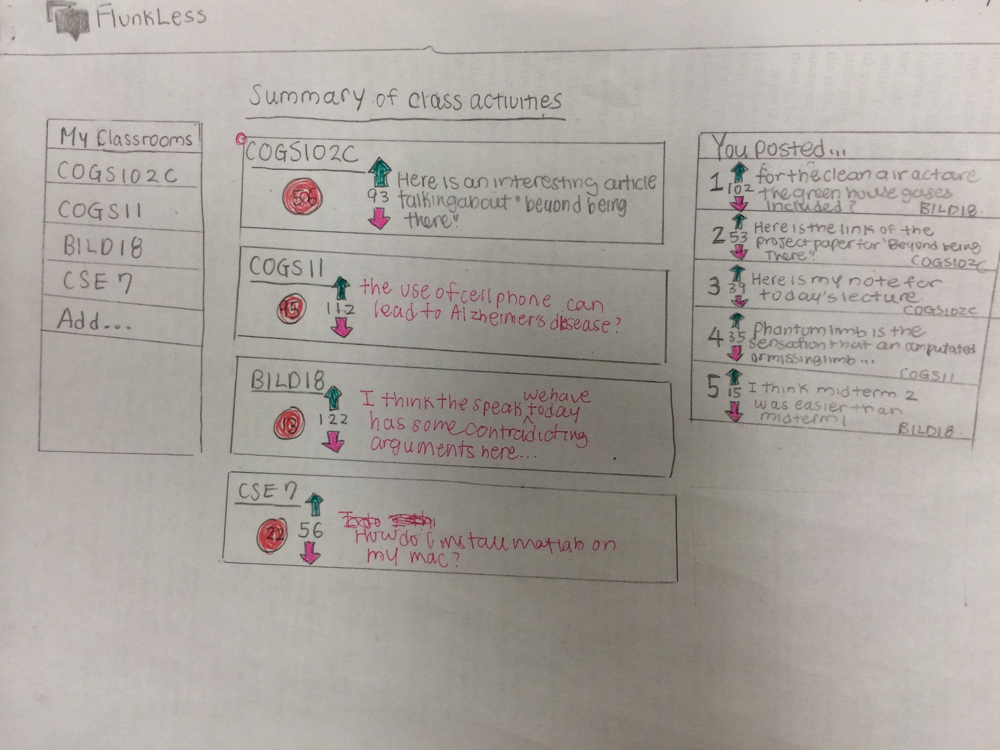
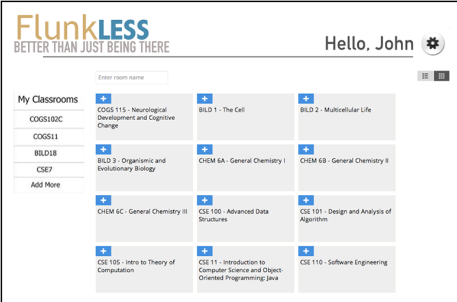

FLUNKLESS
how do you effectively engage and facilitate better communication for over a hundred students in a college lecture?
top design chosen by instructors
In large universities, such as UCSD, the communication is one-way from the professor to the students. Many students are losing interest during lecture and going to their laptops for distractions.
DURATION: April 2014- June 2014
ROLE: UX Researcher
TOOLS: Contextual Inquiry, Ethnographic Studies, Affinity Diagramming, Persona Writing, Cultural and Sequence Modelling, Visioning, Wireframing, Prototyping, Competitive Analysis
COLLABORATORS: Vlad Bakhurinsky, Michelle Wang, Jared Defigh, Meena Kaushik, Hui Ping Lee, Lucas DePaula, Alex Peterson
DELIVERABLES: Final Executive Summary | Final Presentation Slides
I think the most important thing I learned from this project is that design must first and foremost be user-centered, rather than aesthetics being first. Also, I always thought that great inventions and ideas came like a light bulb to inventors, but I found that new inventions are based on research on user data and needs, and ideas are usually built up over time. This project opened my eyes to see that UX design can change the world in so many different ways, such as connecting students to professors, or changing social issues through research and design.
the challenge
our approach and process
After 12 interviews with students, teaching assistants, and professors, we undestood more about our users and their habits, desires, and needs. Through this, we created an affinity diagram (a way to visualize data from our interviews and user research), personas, visionings, and prototypes.
the outcome
Because we have three users, all three of them had different wants and needs, but all expressed a desire for more effective communication between each other. We wanted to find out more, so we continued with our iterative design process and interviewed 6 more people. Originally, we thought the problem was finding a more effective way for nonsynchronous communication on Facebook between our users, but user data has shown us that the user need is for synchronous communication during lecture, which is impossible in a large lecture without technology. This is reflective of a paper written by a prominent UCSD HCI professor, Jim Hollan, who mentions that technology's purpose shound not be to replicate face-to-face interaction, but to go beyond being there and to meet needs that are not met even with physical proximity. We consolidated all our user data into an affinity diagram, which is a way to visualize the patterns of the different issues and insights presented by our users that easily reveals our users' needs.

the challenge
Nothing currently comes close to fulfilling the needs we found, so it'll be difficult designing something different when it has never been done before.
Based on our competitive analysis, we have found that no current websites, applications, or tools fulfill this need. Piazza offers a nonsynchronous communication Q&A platform, Facebook does not support effective and easy communication between our users for educational use, the iClicker only has options A-D for questions the professor offers (but not the students), and Blackboard's (TED's) usability is extremely poor and does not offer synchronous communication.
our approach and process
We decided to draw up wireframes and vote on various ideas we all presented (all while having some fun!)
For our synchronous communication during lecture for effective communication between a large number of students and the teachers during lecture, we reviewed our user needs from our research and decided to design these features to meet needs from our interviews:
NEED: Students tend to forget their questions by the time they get a chance to talk to the professor...this is, if the student doesn't already feel intimidated by the professor. Professors want to make sure all questions are answered to avoid confusing.
SOLUTION: Ask Away post your questions as they come to mind.
NEED: Students love to help each other out by sharing material, and professors' and TAs' goals are to make sure the students are passionate about the material.
SOLUTION: Share It share related links about the class that you stumble upon, or pictures of notes
NEED: TAs and professors often find repeating questions, and TAs have to spend time finding the important questions and issues rather than it being readily available.
SOLUTION: Vote popular questions go to the top, creating priority ranking.
NEED: Professors are unsure if they have been misunderstood or confusing, especially since silence or lack of questions doesn't mean that the students understood the material
SOLUTION: Checkpoints for professors to gather instant feedback on students' progress.
the outcome
 





{kind=link}
{kind=link}
{kind=link}
{kind=link}
{kind=link}